The Print configuration window will be displayed. The heading in this dialog box will also reflect the type of transactions that are being printed—in this case, a quote for a sales order.

Transactions can be printed as a list for archiving or internal purposes, or as forms (such as invoices or cheques) for customers or suppliers.
You can print a list of transactions from any of the tab views. As a general strategy, you should first find and sort the list to show the transactions that you want to print. If you only want to print some of the transactions in the list, highlight those transactions
The Print Configuration window for the transaction list appears.11
Don’t Show on Statement Set this option if you do not want the transaction to be shown on a statement—this is intended for suppressing the printing of messy fix-ups you may have done that you do not want the debtor to be aware of. You need to make sure that you the transactions that you suppress in this manner come to a total of zero, otherwise your statements may not balance when printed.
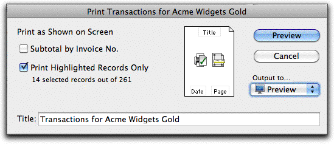
Set the Subtotal by option to subtotal the listThis is only available is the list has been sorted by one of the columns. If selected, a subtotal will be printed whenever the value in the sorted column changes.
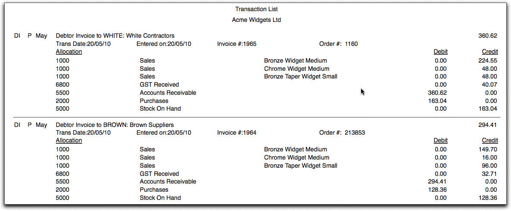
Click Print/Preview/Save As/Send to output the listThe transaction list will be printed as shown on the screen, but with the addition of Net and Tax columns.
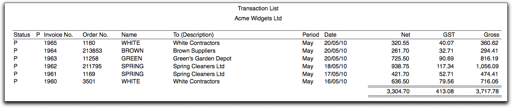
For a discussion on printing issues —see Printing and emailing.
The report settings window will open.
Set the layout to Debits and Credits
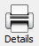
The Print Details
icon
The other layout options allow you to print the transactions showing the Net, GST (or VAT or Tax) and Gross on each line, and also the Items used on each line. You can change this and other sidebar reports (or add your own) by using the report writer.
You can print any MoneyWorks transaction (except a journal) as an accounting form (invoice, purchase order etc).
Click the Print/Preview button
Each account code is shown, along with the amount debited or credited to that account. This also shows the system detail lines which are added by MoneyWorks to balance the transaction.
For invoices only, a printer icon appears in the P (for printed) column after they have been printed. Sorting this column in descending order will show unprinted invoices first.
The Print configuration window will be displayed. The heading in this dialog box will also reflect the type of transactions that are being printed—in this case, a quote for a sales order.
For a discussion of the options on this window —see emailing Invoices, Orders and Statements. Only the “Plain” forms can be saved as text file.
Note: Apart from the “Plain” forms, MoneyWorks does not distinguish between individual transaction form types (cash receipts and invoices for example). It is up to the operator to choose the right form, unless the form itself is sufficiently “smart” to determine what sort of transaction it is printing12.
However each transaction view will remember its default form.
Note: A “Plain” invoice is a basically a report created using the report writer that is stored in the Invoices folder in the Plain folder inside the MoneyWorks Custom Plug-ins folder.
If this is the first time you have printed this particular form, or if you have changed printers since you last printed it, you will need to check the paper size and positioning of the form.
For further information see Setting the Form Size.
Click Print or Preview to continue
If you often want to print a group of different forms at one time (e.g. you may want to print customer invoices together with envelopes to put them in), you can set up a “multi-page form” —see Creating a Form. These appear in the Use Form pop-up menu in the same manner as any other form.
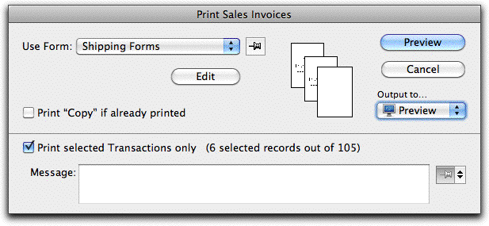
Samples of the forms to be printed will be displayed as shown above.
Click Print
The forms will print as normal.
If a pause has been included in your meta-form, the following window will be displayed, giving you the opportunity to change the stationery in your printer.
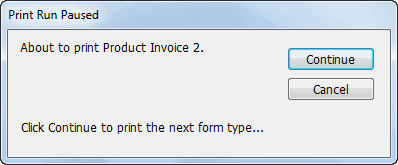
Set the Output to option to Email and click SendThe Mail Attachment window will be displayed. Use this to indicate the subject message, and to whom you will be sending it.
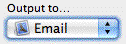
To email, set the output pop-up to email.
Note: The forms that have already been “printed” will have been “spooled” onto your hard drive, and probably won’t have been physically printed when this message is displayed. You need to wait for them to be printed before you change your stationery.
When you have loaded the correct stationery, click Continue
You can email the invoices, receipts, statements and order forms. The forms will email as pdf attachments.
Note: The method of sending email is determined by the Emailing Preference. If the default option Create Message in the system email client option is selected, emails will be created in your preferred email client (Outlook, Mail etc), and you will need to send them manually from this. If the Send messages directly via a mail server option is set, the emails will be sent immediately with no record in your email client (unless you have also set the BCC option).
Either highlight the transactions and choose Print «Transaction» from the Command menu, or click the Print icon on an open transaction. For statements, use Print Statement in the Command menu.
If you want to send the forms to their intended recipient (i.e. the customer/ supplier):
Select the Separate Emails tab
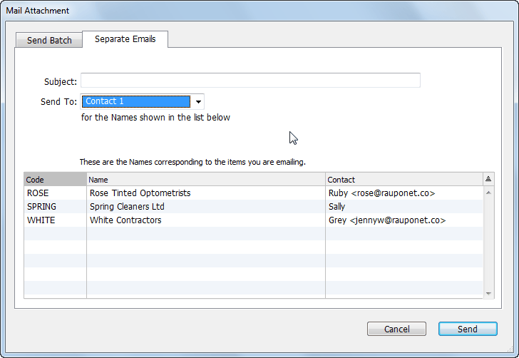
Providing you are emailing a proper form (i.e. a .invc or .stmt) and not a variant of the Plain invoice (which is actually a report), you can include merge text from the underlying file in the subject field, and, if you are using the SMTP option, the message field. For example, when emailing an invoice
you might have something like:
Our invoice <<ourref>> for $<<gross>> is attached
and for a statement, something like
Statement for <<name.name>>
You can include valid MoneyWorks expressions between the angle brackets, so for a statement you could have something like the following:
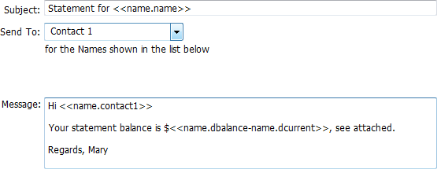
Note: This will work for the Separate Emails option only, where a separate email is generated for each transaction (or Customer, if a statement).
Note: The email will be addressed to all people who have the selected role in the organisation. For example if the invoice is sent to the "Receivables" role, the Send to field of the email will be populated with the email address of every contact with the "Receivables" role in the organisation.
A separate email will be generated for each Transaction being emailed, with the Transaction/Statement form included as an attachment. These are not sent by MoneyWorks, but are created in your email program. If the email address is missing, the resultant email will be unaddressed.
Click Send
If you are sending more than one invoice, a separate email for each debtor will be created with the invoice enclosed as an attachment. Unless the SMTP email option has been set, you will need to send the emails from your emailer (MoneyWorks has made them for you, but not sent them).
You can send a batch of invoices, orders or statements to nominated recipients. In this case each recipient will get an attachment that includes all the transactions being emailed.
Select the Send Batch tab
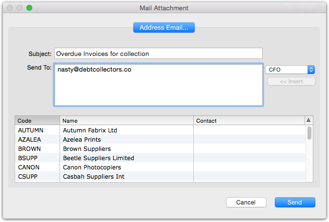
Enter the subject into the Subject field
Use the pop-up menu to select the contact or role that you want to which you want to send the email
Either highlight the recipients in the list and click the Insert button, or double-click each recipient in the list
The email address for the indicated contact will be copied into the Send To field. You can also type addresses directly into this field (separating email addresses with a comma), or double-click on a Name in the list to insert the email address(es) for that Name.
Message field
Click the Send button
A single email will be generated, addressed to the specified recipient(s), with a single attachment encompassing the transactions that were selected. Unless you are using the built-in SMTP option, you need to send the email from your email client (MoneyWorks has made the email for you, but not sent them)
When all the details of the transaction are finalised, the transactions should be posted. Once posted, the accounting information in the transaction cannot be modified—if you need to change it use the Cancel command.
Transactions need to be posted to be credited or debited against the accounts that are assigned to them, and (where appropriate) to update the stock and/or the debtor’s or creditor’s balances. For this reason it is not possible to close a period which contains unposted transactions.
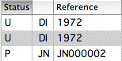
If you use the Post option when entering the transaction, it will be posted automatically when you click the OK or Next button. If you haven’t used this, you will need to post the transactions as follows:
If some of the transactions that you highlighted were already posted, MoneyWorks will tell you so in this dialog box. You can still go ahead and post those that are not already posted.
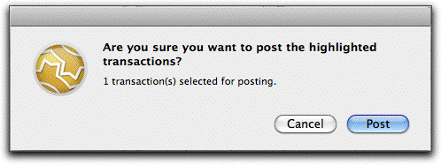
The highlighted transactions are posted to the appropriate accounts. The status flag for the transactions changes to P.
If the current tab view is Unposted, the transactions will disappear from the list since they are no longer “unposted” transactions.13
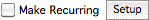
MoneyWorks allows you to set up transactions that will recur (as an unposted transaction) at regular intervals. These recurring transactions can be used to enter monthly or fortnightly salary payments, rents, hire purchases, or any other automatic payment.
The Post Transactions confirmation dialog box will appear.
Unposted transactions have a U in the Status column
The Define Recurring dialog box is displayed.
The Recurring checkbox
|
|
|---|---|
|
|
|
|
|
|
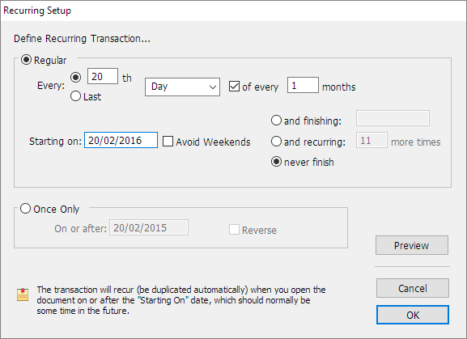
Specify the recurrence frequency (as in the examples below)
|
|
|---|---|
|
|
|
|
|
|
Click Avoid Weekends if you want transactions which would otherwise fall on weekends to be brought forward
Alter Start On (the start date) for the recurrence
The default start date is one month from the current date.
The default is Never Finish—which really means that you will manually stop the recurrence at you discretion. See Stopping a Recurring Transaction.
If you click and finishing and enter a date in the finishing date box, the transaction will not recur after that date.
If you click and recurring...more times and enter the number of times recurring, the transaction will recur that many times only.
Click the Preview button to view the dates generated by these criteria
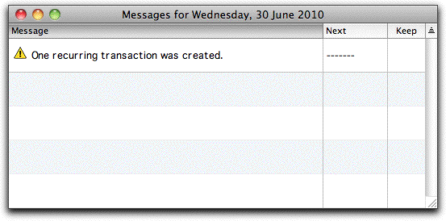
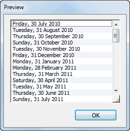
Click OK to close the Preview windowClick OK to save the details of the recurring transaction or click the Cancel
button to cancel them
If you need to edit the recurrence specification, click the Setup button to show the Define Recurring Transaction setup box again.
Note: The recurrence property is passed on to the newly created transaction. You will notice that the original transaction no longer appears with the recurring transaction icon next to it. Instead, the new transaction appears with the icon. MoneyWorks uses the new transaction as the template for future recurrences. If you modify the transaction before it next recurs, the change will be “inherited” by future recurrences.
Note: The period in which the transaction belongs is determined by the transaction date (which for recurring transactions will be the specified recurrence date). The transaction will not recur if its period has not been opened, and a warning will be given.
When the period is opened, the transaction will recur automatically.
The Recurring transaction icon appears in the status column of the transaction list to indicate that the transaction has been set up to recur in the future.
The Recurring icon in the status column of the transaction list.
A recurring (unposted) transaction will be generated by MoneyWorks when the document is opened on or after the recurring date and the period into which it should recur has been opened. A message is displayed in the Messages window.
You can use the Recurring transaction facility to set up a transaction which will
automatically reverse at some future date.
The Recurring options at the top of the dialog box are dimmed. New options appear in the Once Only part of the dialog.
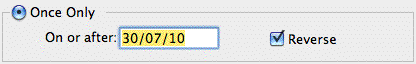
The transaction will no longer appear with the recurring transaction icon next to it. Note that you can do this even if the transaction has been posted.Turn the recurring option off to stop a transaction occuring
Click Reverse
To alter the recurrence properties of an existing recurring transaction:
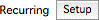
Click the recurring Setup button in the transaction toolbarDeleting an unposted recurring transaction will also stop it from recurring.
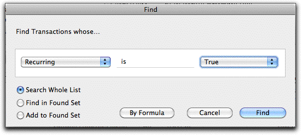
Transactions that are set to recur can be easily found by using the Find by Field to locate recurring transactions in the current view of the transaction list, or use the Recurring Transactions report.The Define Recurring Transaction settings window will be displayed.
Click the Setup button to edit the recurrence settings.
A recurring transaction will cease recurring once the finish criterion has been reached. Depending on the settings, this will be either:
When the specified number of recurrences have occurred;
When the finish date is reached;
Never.
In the case of a Never Finish setting, you will need to manually stop the transaction from recurring. You may want to do this even if the finishing condition was something other than Never Finish.
To stop a transaction from recurring again:
This will have the recurrence icon in the status column.
Turn off the Make Recurring check box and Click OK